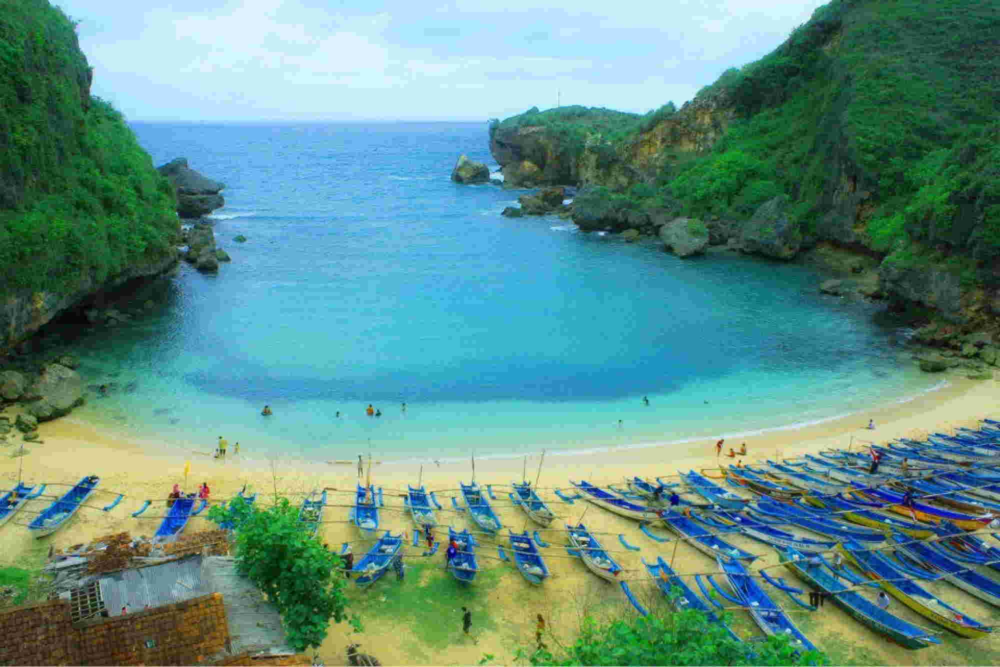
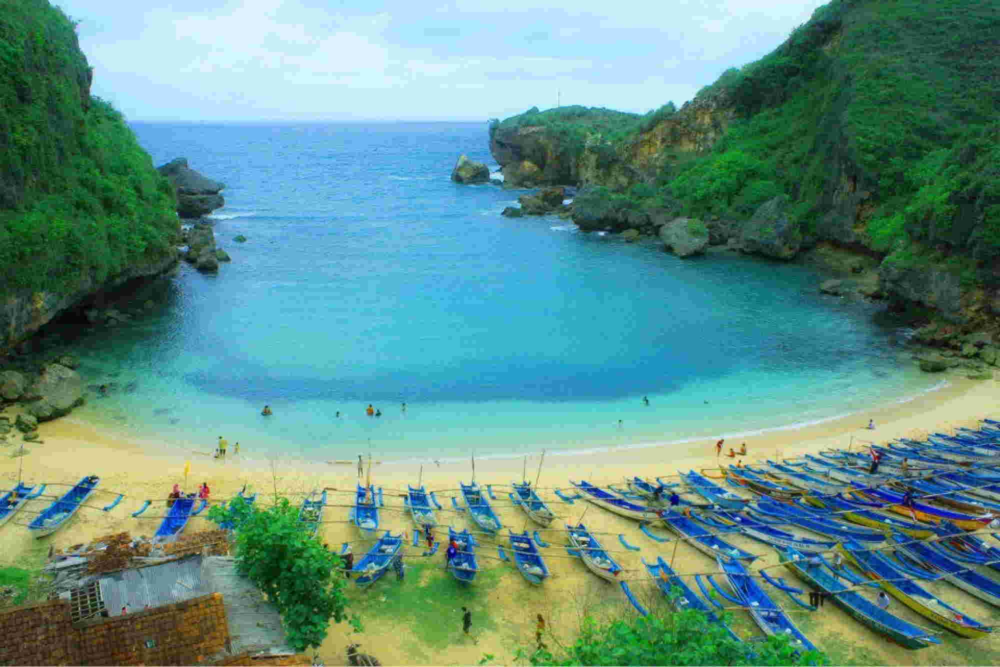

CANDI BOROBUDUR
Borobudur (bahasa Jawa: ꦕꦤ꧀ꦝꦶꦧꦫꦧꦸꦝꦸꦂ, translit. Candhi Barabudhur) adalah sebuah candi Buddha yang terletak di Borobudur, Magelang, Jawa Tengah, Indonesia. Candi ini terletak kurang lebih 100 km di sebelah barat daya Semarang, 86 km di sebelah barat Surakarta, dan 40 km di sebelah barat laut Yogyakarta. Candi berbentuk stupa ini didirikan oleh para penganut agama Buddha Mahayana sekitar tahun 800-an Masehi pada masa pemerintahan wangsa Syailendra. Borobudur adalah candi atau kuil Buddha terbesar di dunia, sekaligus salah satu monumen Buddha terbesar di dunia.
Monumen ini terdiri atas enam teras berbentuk bujur sangkar yang di atasnya terdapat tiga pelataran melingkar, pada dindingnya dihiasi dengan 2.672 panel relief dan aslinya terdapat 504 arca Buddha. Borobudur memiliki koleksi relief Buddha terlengkap dan terbanyak di dunia. Stupa utama terbesar teletak di tengah sekaligus memahkotai bangunan ini, dikelilingi oleh tiga barisan melingkar 72 stupa berlubang yang di dalamnya terdapat arca Buddha tengah duduk bersila dalam posisi teratai sempurna dengan mudra (sikap tangan) Dharmachakra mudra (memutar roda dharma).
CANDI RATU BOKO
Situs Ratu Baka atau Candi Boko (Hanacaraka:ꦕꦤ꧀ꦝꦶꦫꦠꦸꦧꦏ, bahasa Jawa: Candhi Ratu Baka) adalah situs purbakala yang merupakan kompleks sejumlah sisa bangunan yang berada kira-kira 3 km di sebelah selatan dari kompleks Candi Prambanan, 18 km sebelah timur Kota Yogyakarta atau 50 km barat daya Kota Surakarta, Jawa Tengah, Indonesia. Situs Ratu Boko terletak di sebuah bukit pada ketinggian 196 meter dari permukaan laut. Luas keseluruhan kompleks adalah sekitar 25 ha.
Situs ini menampilkan atribut sebagai tempat berkegiatan atau situs permukiman, namun fungsi tepatnya belum diketahui dengan jelas.Ratu Boko diperkirakan sudah dipergunakan orang pada abad ke-8 pada masa Wangsa Sailendra (Rakai Panangkaran) dari Kerajaan Medang (Mataram Hindu). Dilihat dari pola peletakan sisa-sisa bangunan, diduga kuat situs ini merupakan bekas keraton (istana raja). Pendapat ini berdasarkan pada kenyataan bahwa kompleks ini bukan candi atau bangunan dengan sifat religius, melainkan sebuah istana berbenteng dengan bukti adanya sisa dinding benteng dan parit kering sebagai struktur pertahanan.[3] Sisa-sisa permukiman penduduk juga ditemukan di sekitar lokasi situs ini.
CANDI PRAMBANAN
Candi Prambanan atau Candi Roro Jonggrang (bahasa Jawa: ꦕꦤ꧀ꦝꦶꦥꦿꦩ꧀ꦧꦤꦤ꧀, translit. Candhi Prambanan) adalah kompleks candi Hindu terbesar di Indonesia yang dibangun pada abad ke-9 masehi. Candi ini dipersembahkan untuk Trimurti, tiga dewa utama Hindu yaitu Brahma sebagai dewa pencipta, Wisnu sebagai dewa pemelihara, dan Siwa sebagai dewa pemusnah. Berdasarkan prasasti Siwagrha nama asli kompleks candi ini adalah Siwagrha (bahasa Sanskerta yang bermakna 'Rumah Siwa'), dan memang di garbagriha (ruang utama) candi ini bersemayam arca Siwa Mahadewa setinggi tiga meter yang menujukkan bahwa di candi ini dewa Siwa lebih diutamakan.
Candi ini adalah termasuk Situs Warisan Dunia UNESCO, candi Hindu terbesar di Indonesia, sekaligus salah satu candi terindah di Asia Tenggara. Arsitektur bangunan ini berbentuk tinggi dan ramping sesuai dengan arsitektur Hindu pada umumnya dengan candi Siwa sebagai candi utama memiliki ketinggian mencapai 47 meter menjulang di tengah kompleks gugusan candi-candi yang lebih kecil.Sebagai salah satu candi termegah di Asia Tenggara, candi Prambanan menjadi daya tarik kunjungan wisatawan dari seluruh dunia.